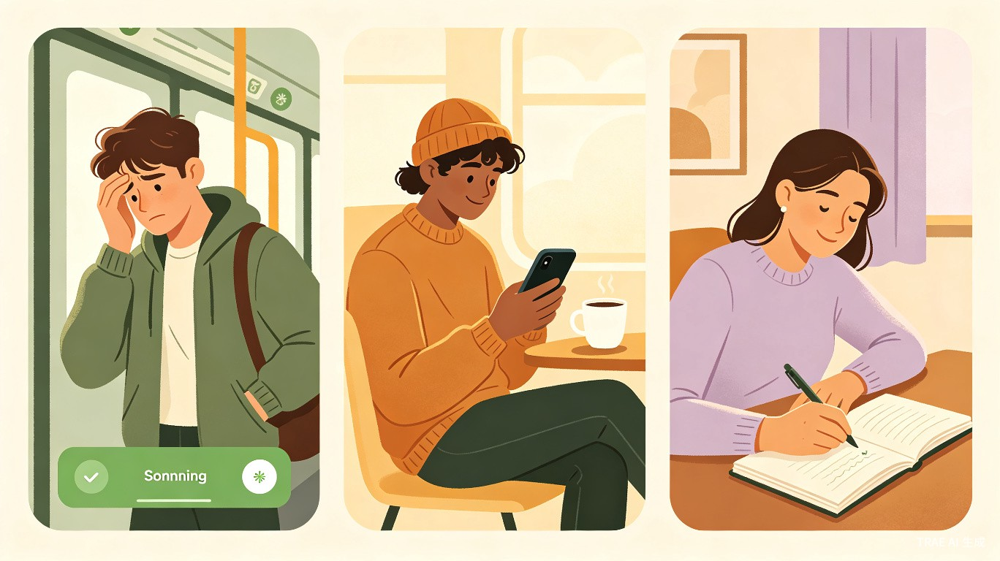
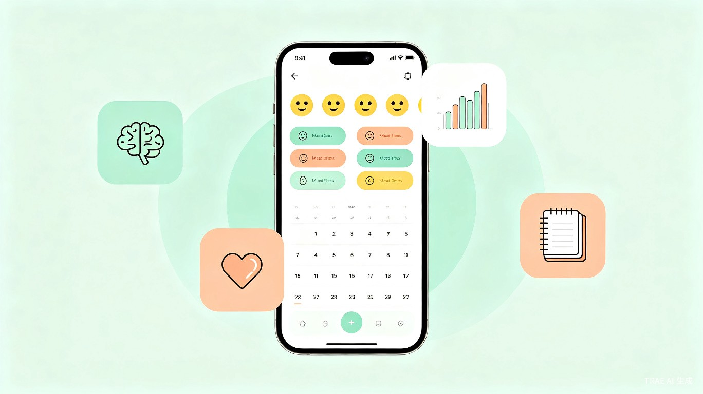

创意介绍
表蕉绿（谐音"表焦虑"）是一款面向当代年轻人的情绪记录小程序。 它的名字传递着核心理念——把焦虑表达出来，就是缓解焦虑的第一步。 用户可以在情绪波动时随手打开小程序，用最简单的方式记录当下的心情， 并通过定期复盘和 AI 智能总结，逐渐看见完整的自己。
"心理评估的一个重要维度在于平时的记录与觉察。当我们开始书写情绪，就已经在疗愈的路上。"
灵感来源
创意的灵感来源于对心理学书籍的深入阅读。在认知行为疗法（CBT）和正念心理学的研究中， 情绪日记被反复验证为一种有效的自我觉察工具。 然而市面上的记录工具要么过于专业（如心理测评 APP），要么过于复杂（如日记类 APP）， 缺少一个真正"轻量、温暖、有洞察"的情绪记录产品。 表蕉绿希望填补这个空白。
目标用户与痛点
核心用户画像
职场新人
22-28 岁，刚步入职场，面临工作压力、人际关系适应等多重挑战，情绪波动频繁但缺乏宣泄渠道。
大学生群体
18-24 岁，学业压力、就业焦虑、社交困扰交织，正处于自我认知和情绪管理能力建设的关键期。
生活过渡期人群
25-35 岁，经历跳槽、搬家、婚恋等人生变化，需要情绪锚点来维持内心稳定。
使用场景

当前痛点分析
现有痛点
- 社会节奏快，年轻人压力大，情绪问题被忽视
- 传统日记 APP 功能繁重，记录门槛高
- 心理测评 APP 使用频率低，缺乏日常陪伴感
- 社交媒体不适合真实情绪表达，存在人设压力
表蕉绿的解法
- 极简操作，3 秒完成一条情绪记录
- 微信小程序，无需下载，随用随走
- AI 定期生成情绪洞察报告，提供自我认知
- 私密安全，只属于你自己的情绪空间
核心功能设计

功能模块总览
情绪快记
选择情绪标签（开心/平静/焦虑/低落/愤怒等）+ 一句话描述 + 可选配图，30 秒内完成记录。
情绪日历
日历视图展示每日情绪颜色，一眼看到情绪波动规律，支持按周/月/季度切换。
AI 情绪洞察
基于记录数据，AI 自动生成周度/月度情绪报告，识别情绪触发因素和变化趋势。
正念建议
根据当前情绪状态，推送个性化的正念练习、呼吸引导和心理学小知识。
隐私保护
端到端加密存储，支持密码锁和指纹解锁，打造完全私密的个人情绪空间。
复盘提醒
智能提醒用户进行周度/月度复盘，引导回顾情绪变化，培养自我觉察习惯。
用户核心流程
Step 1：随手记录
打开小程序 → 选择情绪标签 → 写一句话（可选）→ 完成记录，全程不超过 10 秒。
Step 2：日常回顾
通过情绪日历查看近期情绪变化，发现情绪波动的规律和模式。
Step 3：AI 分析
每周/每月自动生成情绪洞察报告，包含情绪趋势、触发因素分析和改善建议。
Step 4：持续成长
根据 AI 建议进行正念练习，逐步提升情绪管理能力，建立健康的情绪表达习惯。
市场价值与商业潜力
赛道红利
近年来，心理健康赛道持续升温。多款心理测评小游戏在社交平台爆火， 如 MBTI 测试、情绪色卡等话题频频登上热搜， 说明年轻人对自我认知和情绪管理的需求正在快速释放。 据相关数据显示，中国心理健康市场规模已超过千亿级别， 且年轻用户群体的付费意愿持续增强。
竞争优势
| 对比维度 | 传统日记 APP | 心理测评 APP | 表蕉绿 |
|---|---|---|---|
| 记录门槛 | 高（需写长文） | 高（需完成量表） | 极低（3秒快记） |
| 使用频率 | 低 | 极低 | 高（日常陪伴） |
| AI 洞察 | 无 | 有限 | 深度分析报告 |
| 获取成本 | 需下载 APP | 需下载 APP | 微信小程序即用 |
| 情绪陪伴感 | 弱 | 弱 | 温暖持续 |
商业模式构想
- 基础功能免费：情绪快记、日历查看等核心功能完全免费，降低使用门槛
- 会员订阅：AI 深度洞察报告、正念课程、情绪分析高级功能需订阅解锁
- 增值服务：与心理咨询师合作，提供一对一在线咨询的入口和预约服务
- 数据价值（需用户授权）：脱敏后的情绪趋势数据可用于心理健康研究合作
发展规划
Phase 1：MVP 验证（1-3 个月）
完成微信小程序 MVP 开发，包含情绪快记、日历视图和基础 AI 总结功能。邀请 100-200 名种子用户内测，收集反馈。
Phase 2：功能迭代（3-6 个月）
上线 AI 深度洞察报告、正念建议模块、复盘提醒功能。优化用户体验，建立社区口碑。
Phase 3：增长运营（6-12 个月）
启动社交媒体运营，与心理学 KOL 合作推广。上线会员订阅体系，探索商业化路径。
Phase 4：生态拓展（12 个月+）
接入专业心理咨询资源，拓展 B 端企业员工关怀市场。探索情绪数据在健康管理领域的应用。
总结
表蕉绿的核心理念很简单：把情绪表达出来，就是看见自己的开始。 在一个节奏越来越快、压力越来越大的时代，年轻人需要一个安全、温暖、低门槛的空间来安放自己的情绪。 表蕉绿不仅是一个记录工具，更是一位沉默的倾听者和智慧的陪伴者—— 它不评判、不定义，只是帮你看见那些被忽略的情绪起伏， 让你在忙碌的生活中，也能温柔地对待自己。
"看见情绪，就是理解自己的第一步。表蕉绿，陪你记录每一天的心情色彩。"